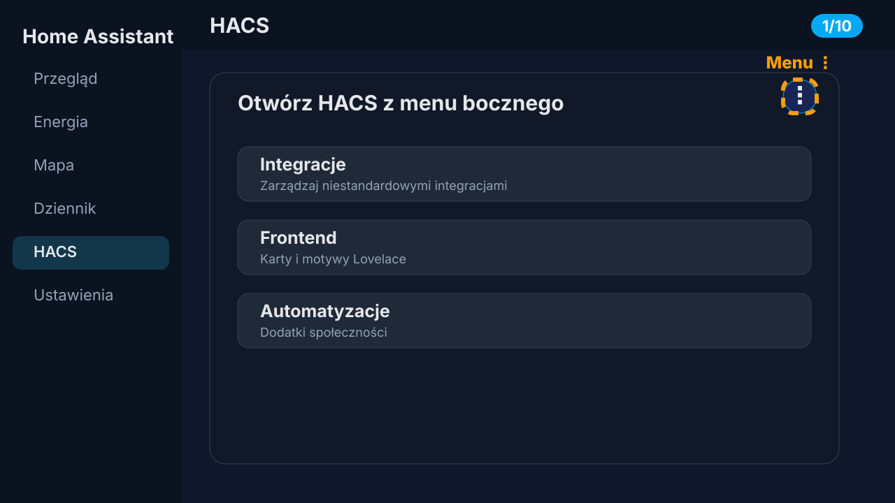
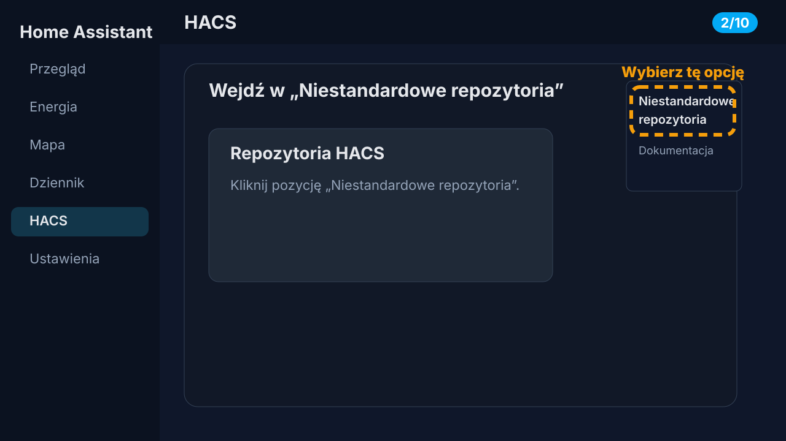
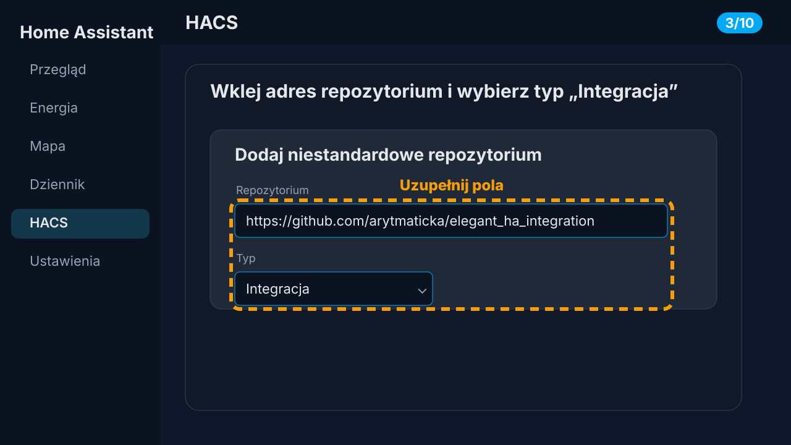
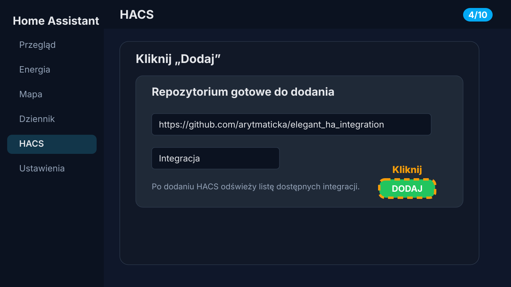
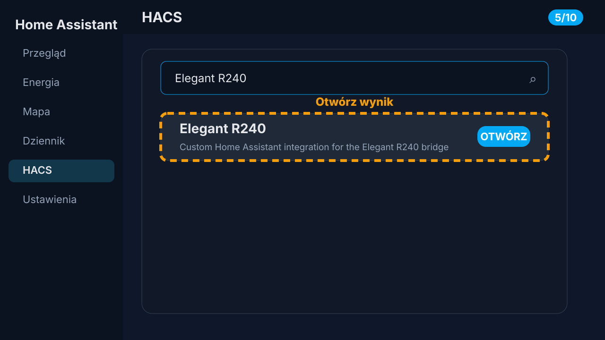
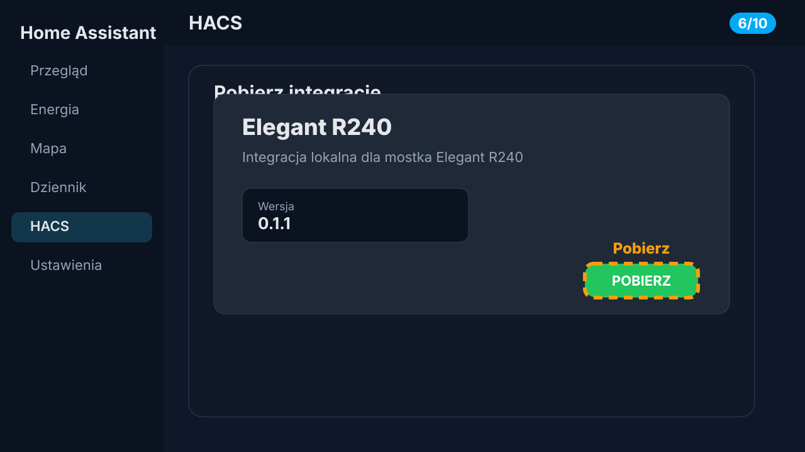
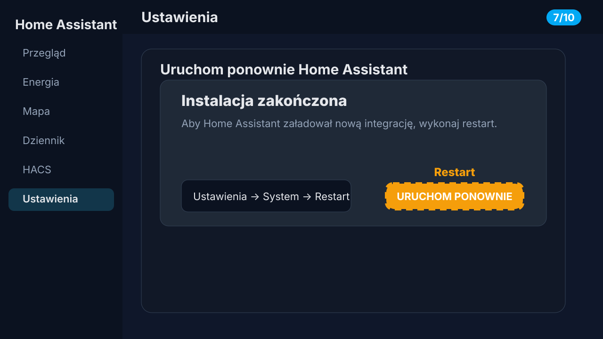
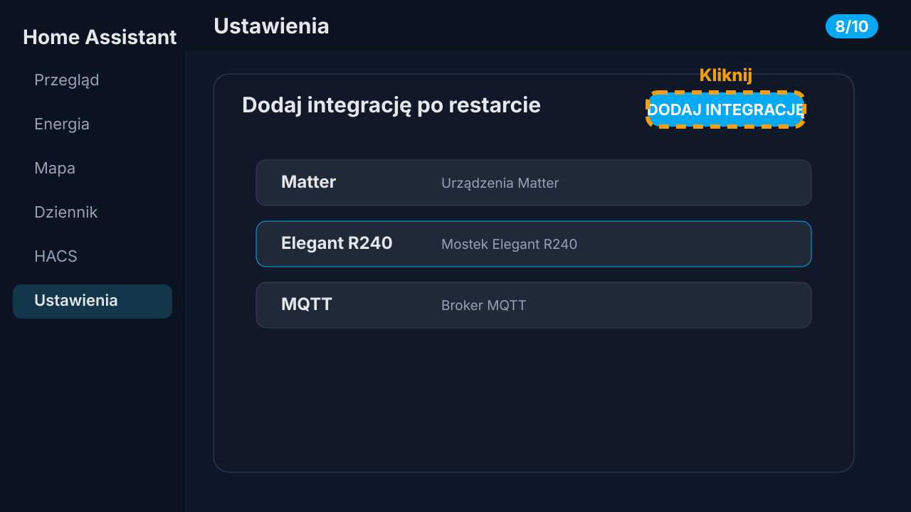
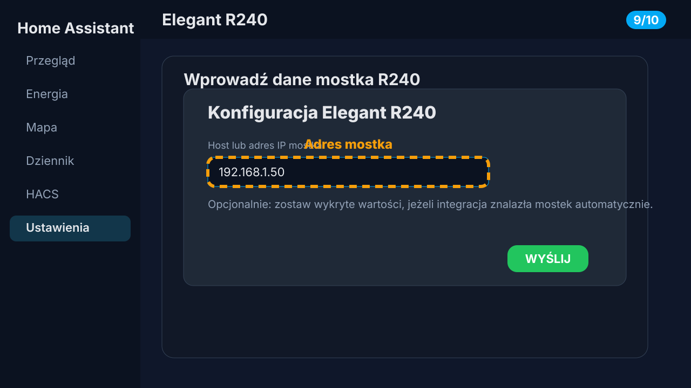
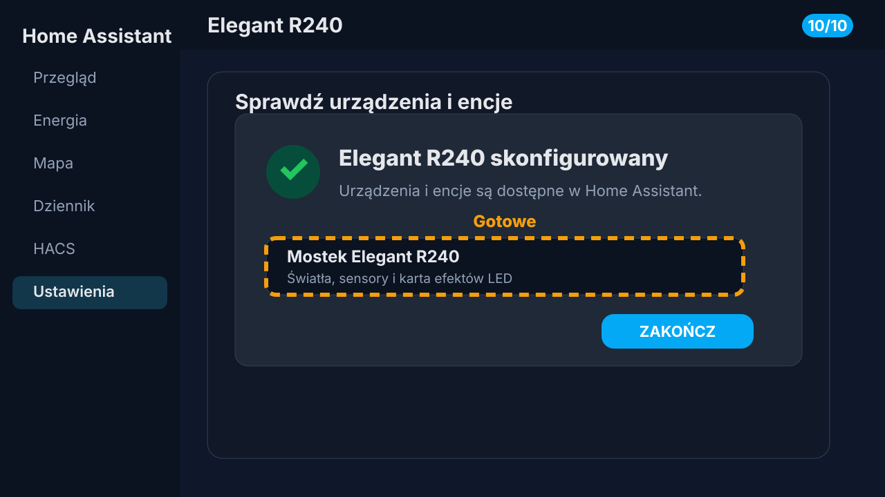

Jak zainstalować integrację Elegant R240 w HACS
Gotowa instrukcja na bloga: prowadzi od dodania repozytorium w HACS, przez pobranie integracji, aż po skonfigurowanie mostka Elegant R240 w Home Assistant.
Przed rozpoczęciem: upewnij się, że HACS jest już zainstalowany w Home Assistant i masz dostęp administracyjny do panelu. Będziesz też potrzebować adresu repozytorium:
https://github.com/arytmaticka/elegant_ha_integration
Zrzuty ekranowe w tym artykule są ilustracyjnymi makietami przygotowanymi do publikacji. Układ HACS może delikatnie różnić się zależnie od wersji Home Assistant/HACS.
1Otwórz HACS
W panelu Home Assistant kliknij pozycję HACS w menu bocznym. Jeżeli nie widzisz tej pozycji, sprawdź, czy HACS jest poprawnie zainstalowany i czy zalogowano się na konto z uprawnieniami administratora.

2Wybierz „Niestandardowe repozytoria”
W prawym górnym rogu HACS kliknij menu z trzema kropkami, a następnie wybierz opcję Niestandardowe repozytoria.

3Wklej adres repozytorium
W polu Repozytorium wklej adres https://github.com/arytmaticka/elegant_ha_integration. W polu Typ wybierz Integracja.

4Dodaj repozytorium
Kliknij przycisk Dodaj. Po chwili HACS powinien zapisać repozytorium i umożliwić wyszukanie integracji Elegant R240.

5Wyszukaj „Elegant R240”
Wróć do listy integracji HACS i wpisz Elegant R240 w wyszukiwarce. Otwórz znalezioną integrację.

6Pobierz integrację
Na ekranie integracji kliknij Pobierz. HACS skopiuje pliki integracji do katalogu custom_components/elegant_r240 w konfiguracji Home Assistant.

7Uruchom ponownie Home Assistant
Po instalacji wykonaj restart Home Assistant. Najczęściej zrobisz to w ścieżce Ustawienia → System → Restart. Restart jest potrzebny, aby Home Assistant załadował nową integrację.

8Dodaj integrację w Home Assistant
Po restarcie przejdź do Ustawienia → Urządzenia i usługi, kliknij Dodaj integrację i wyszukaj Elegant R240.

9Skonfiguruj mostek Elegant R240
Wpisz host lub adres IP mostka R240, jeżeli integracja nie uzupełniła go automatycznie. Następnie kliknij Wyślij.

10Sprawdź urządzenia i encje
Po poprawnej konfiguracji Home Assistant pokaże urządzenie Elegant R240 oraz powiązane encje, takie jak światła i sensory. Możesz teraz dodać je do dashboardu lub automatyzacji.
